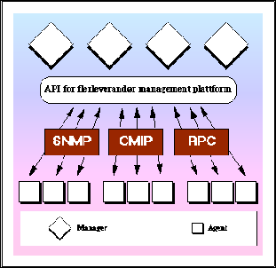
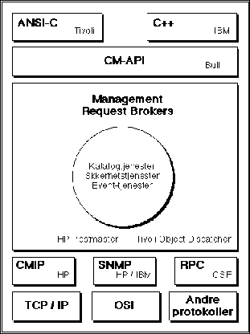

En idealisert modell for nettverksadministrasjon, vil være noe som fullstendig skjuler mekanismene for kommunikasjon mellom manager og agent.

I denne modellen vil det kunne eksistere flere protokoller for utveksling av management informasjon, men de enkelte managere behøver ikke forholde seg til disse. Dette oppnås ved å innføre et lag mellom agent og manager.
Sett fra managerens side er dette kun et standardisert programmeringsgrensesnitt som man kommuniserer gjennom. Bibliotekene som implementerer dette grensesnittet vil ta hånd om protokollkonverteringer, datakonverteringer, brukergrensesnitts relaterte funksjoner osv.
Denne modellen vil fremfor alt fremme utviklingen av avansert programvare for distribuert systemadministrasjon, og vil gjøre det attraktivt for tredje parts utviklere å tilby slik programvare - de kan forholde seg til ett programmeringsgrensesnitt og slipper å ta hensyn til protokoller og leverandørspesifikke undersystemer.
OSFs Distributed Management Environment (DME) er et godt eksempel på en realisering av denne modellen, og vises i figur 2.

Plattformmodellen er skisssert i figur 1